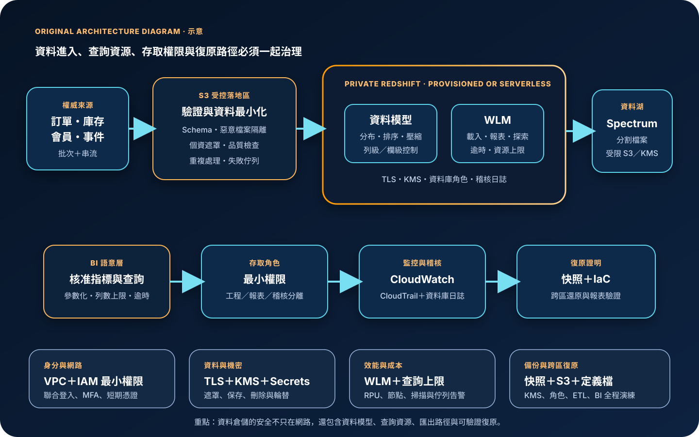

Amazon Redshift：雲端資料倉儲、分析效能與資料治理
Amazon Redshift 是受管的雲端資料倉儲服務，適合以 SQL 分析大量結構化與半結構化資料，並可透過佈建叢集或 Redshift Serverless 提供運算能力。服務能減少底層基礎設施管理，但不會代替資料分類、模型設計、查詢隔離、身分治理、成本控制、備份驗證或災難復原決策。
作者：Dr. William｜查閱與發布：2026-09-28
服務定位
Amazon Redshift 以欄式儲存、大規模平行處理與 SQL 查詢引擎支援商業智慧、營運報表、資料集市、分析模型與跨資料來源查詢。資料可由 S3、關聯式資料庫、串流或整合管線載入；分析工具與應用則透過受控連線執行查詢。
主要模式包括佈建叢集與Redshift Serverless。佈建叢集讓團隊選擇節點類型、節點數與網路配置；RA3 節點將受管儲存與主要運算容量分離。Serverless 以 namespace 與 workgroup 管理資料及運算，自動配置容量並依使用量計費。Serverless 降低容量管理負擔，不代表查詢、資料保留、網路、權限與成本可以不設邊界。
核心概念與適用邊界
資料與效能元件
- 欄式儲存：同欄資料集中儲存，適合掃描少數欄位與大量資料的聚合分析。
- MPP：查詢工作分散到多個運算資源平行執行；資料分布不均會形成傾斜與慢節點。
- 分布樣式：決定資料列如何配置到運算切片；錯誤的分布鍵會增加資料搬移。
- 排序鍵：影響區塊略過與掃描量；須依常用過濾、時間與關聯模式設計。
- 壓縮編碼：降低儲存與 I/O；載入方式、資料型別與欄位特性會影響效果。
- WLM：工作負載管理用於分配查詢資源、優先級與佇列，避免報表與臨時查詢互相拖累。
部署與整合邊界
- RA3：受管儲存可讓資料量與主要運算容量分開成長，仍需管理節點、查詢與容量。
- Serverless：自動配置分析容量；客戶仍須設定 workgroup、namespace、網路、基礎容量與使用上限。
- Spectrum：可查詢 S3 資料湖中的外部資料；檔案格式、分割、掃描量與權限直接影響成本及效能。
- 資料分享：可在不複製資料的情況下分享即時資料；分享範圍與消費者權限必須明確治理。
- 連線介面：JDBC、ODBC、Data API 與整合工具都需要個別的身分、網路、逾時和查詢限制。
- 分析系統：Redshift 不宜作為高頻單筆交易、低延遲 OLTP 或未治理原始資料的唯一儲存層。
適合與不適合的使用情境
適合
- 需要以標準 SQL 執行大量掃描、聚合、關聯與商業智慧報表。
- 資料來自多個營運系統，需要建立經治理的分析模型、指標口徑與歷史資料。
- 團隊可管理資料管線、schema、資料品質、查詢工作負載、權限與成本預算。
- 需要結合 Redshift 內部資料、S3 資料湖與受控資料分享進行分析。
- 工作量相對穩定且需要精細容量控制時使用佈建叢集；間歇、難預測或希望減少容量操作時評估 Serverless。
不適合或不能單獨完成
- 要求毫秒級單筆交易、頻繁逐列更新、複雜交易鎖定與高併發 OLTP。
- 把資料倉儲直接開放給大量終端使用者提交任意 SQL，卻沒有語意層、資源治理與查詢限制。
- 沒有資料擁有者、品質規則、欄位分類、保留期限與刪除程序，只想集中複製所有資料。
- 希望以單一叢集同時承擔關鍵報表、資料科學探索、ETL 與高風險臨時查詢，卻不做工作負載隔離。
- 把自動快照視為完整災難復原，卻未驗證 KMS、IAM、網路、BI 設定、管線與跨區重建。
示意故事案例：零售分析平台
以下為示意案例，不代表特定企業或正式部署。 一家跨通路零售商將訂單、庫存與會員系統視為權威來源。批次與串流資料先進入受控 S3 區域，完成 schema 驗證、惡意檔案隔離、個資遮罩、資料品質檢查與失敗佇列處理，再由私有資料管線載入 Redshift。資料工程角色可維護指定 schema；報表角色只能讀取經核准的資料集與遮罩後欄位；終端使用者透過 BI 語意層查詢，不能直接取得資料庫管理權限。
正式環境部署於私有子網路，使用 IAM 最小權限、聯合登入、MFA 與短期憑證。資料庫認證資訊保存在 Secrets Manager，一般設定存於 Parameter Store；靜態資料與快照使用 KMS 加密，連線強制 TLS。WLM 將每日營運報表、資料載入與臨時分析分開，查詢監控規則終止超出掃描量或執行時間的查詢。CloudWatch 監控容量、查詢延遲、佇列、儲存與失敗，CloudTrail 保存管理 API；資料庫稽核日誌送往受保護位置。自動快照、手動快照、IaC、轉換程式與 BI 定義定期在另一區域演練還原。

建置與運作流程
- 定義分析目標：記錄報表、資料新鮮度、查詢併發、p95 延遲、資料量、RPO／RTO 與成本上限。
- 盤點權威來源：標示來源系統、資料擁有者、更新頻率、主鍵、刪除事件與重新載入方式。
- 分類資料：識別個資、財務、機密與一般資料，定義欄位遮罩、列級或欄級存取及保存期限。
- 選擇模式：依工作量穩定性、容量控制、維運能力、可用性與計費模型選擇佈建叢集或 Serverless。
- 建立私有網路：使用 VPC、私有子網路、安全群組與受控端點，只允許資料管線、BI 與維運來源。
- 建立身分治理：管理平面採 IAM 最小權限、聯合登入、MFA 與短期憑證；資料平面使用資料庫角色與群組分權。
- 設計資料模型：依查詢與業務口徑規劃 schema、事實表、維度表、資料型別、分布與排序策略。
- 建置受控載入：資料先進入隔離區，完成格式、schema、惡意內容、品質、遮罩、重複與失敗處理後再載入。
- 保護機密：資料庫認證資訊使用 Secrets Manager 管理與輪替；一般設定使用 Parameter Store，不寫入程式碼或日誌。
- 啟用加密：強制 TLS，使用 KMS 保護資料與快照，限制 key policy、管理權限、停用與刪除操作。
- 治理工作負載：以 WLM、優先級、查詢監控規則、逾時與併發限制隔離載入、報表及臨時分析。
- 建立資料存取層：使用檢視表、資料分享、列級與欄級控制或動態遮罩，避免廣泛授予底層表權限。
- 建立觀測與稽核：以 CloudWatch 監控容量、佇列、查詢、磁碟與錯誤；以 CloudTrail 與資料庫稽核日誌保存變更及存取證據。
- 控制成本：設定 Serverless 使用上限或叢集排程，檢查閒置、掃描量、Spectrum 檔案配置、併發擴展與資料保留。
- 備份與復原：設定快照保存與跨區需求，保留 IaC、schema、轉換、BI 與權限定義，定期執行完整還原演練。
成本、可用性與維運考量
佈建 Redshift 的主要成本來自節點、受管儲存、備份儲存、併發擴展、Spectrum 掃描與資料傳輸；Serverless 主要依 RPU 使用量與受管儲存計費。S3、Glue Data Catalog、KMS、CloudWatch、跨區快照與其他整合服務可能另行計費。全表掃描、低效率關聯、資料傾斜、過寬資料型別、小檔案、未分割的 Spectrum 資料與無界限 BI 查詢都會放大成本。
高可用性必須區分服務可用性與工作負載復原。Serverless 及不同佈建選項提供各自的受管可用性能力；是否採用 Multi-AZ、單一或多個叢集，須依區域支援、工作負載、成本與 RTO 決定。應用端仍要設定連線逾時、有限重試、查詢取消、降級報表與資料新鮮度標示。
跨區復原須包含快照、KMS key、VPC、安全群組、IAM、資料庫角色、schema、外部表、S3 資料、ETL、排程、BI 連線與 DNS。僅確認快照存在不足以證明可復原；演練必須量測還原時間、重跑資料範圍、權限驗證、報表一致性與切換程序。
Amazon Redshift 特有資安風險與控制
- 公有可存取設定：正式資料倉儲優先放在私有子網路，安全群組只允許指定來源；持續檢查 publicly accessible 與路由變更。
- 資料庫超級使用者濫用：超級使用者只用於必要管理與緊急復原，日常操作改用分離角色、聯合登入、MFA 與短期憑證。
- 過寬 schema 或表權限：採預設拒絕、最小 GRANT、角色分層、檢視表、列級安全、欄級權限與動態資料遮罩。
- 資料分享外洩：每個 datashare 都要有資料擁有者、消費者、用途、欄位分類、到期日與撤銷流程，不能把分享當成免治理的複製替代品。
- Spectrum 越權：限制外部 schema、Glue Catalog、S3 bucket、KMS key 與 IAM role；不同信任區不得共用過寬服務角色。
- COPY／UNLOAD 權限濫用：將載入與匯出角色分離，限制 S3 路徑、KMS、格式與目的地，對大量匯出、跨帳戶存取及政策變更告警。
- SQL 注入與任意查詢：使用參數化查詢、核准語意層、查詢模板、逾時、列數與掃描上限；終端輸入不得直接拼接 SQL。
- 工作負載耗盡：以 WLM、查詢監控規則、優先級、併發與使用上限隔離高風險查詢，監控長查詢、佇列與資源尖峰。
- 敏感資料進入日誌：查詢文字、應用錯誤、稽核與 BI 記錄不得包含 credential、Access Key、Secret Key、Token、密碼、cookie 或不必要個資。
- 加密與金鑰失效：使用 KMS 加密叢集、Serverless namespace 與快照，限制 key policy，並對停用、排程刪除與授權變更告警。
- 稽核證據缺口：CloudTrail 主要記錄管理 API；資料庫登入、連線與使用者活動還須依需求啟用資料庫稽核日誌並保護保存位置。
- 快照無法還原：定期在隔離帳戶或區域測試快照、KMS、IAM、網路、資料庫角色、外部表與 BI 連線，不以成功建立快照代替復原證明。
共同責任邊界
AWS 負責 Redshift 服務底層實體設施、硬體、受管平台與服務可用性能力，並依部署模式執行部分修補、容量配置、儲存、快照與故障處理。客戶負責資料分類、schema、分布與排序、資料品質、查詢、WLM、VPC、安全群組、IAM、資料庫角色、KMS、外部資料、日誌、成本與復原。
客戶仍須落實 IAM 最小權限、管理者 MFA 與短期憑證、網路隔離與公開存取盤點、KMS 加密、Secrets Manager／Parameter Store、CloudTrail／CloudWatch、備份及跨區復原。AWS 不會替客戶判斷哪個使用者可以看哪一列資料、報表口徑是否正確、SQL 是否過度昂貴、外部 S3 路徑是否授權過寬，或快照能否在目標時間內恢復完整業務。
上線前可執行檢查清單
- □ 已記錄資料量、載入頻率、p95 查詢延遲、併發、資料新鮮度、RPO／RTO 與月成本上限。
- □ 每個來源、資料集與指標都有擁有者、品質規則、分類、保存期限、刪除與重載程序。
- □ 已依工作量、維運能力、可用性與成本測試選定佈建叢集或 Serverless。
- □ schema、資料型別、壓縮、分布與排序策略已以代表性資料及查詢驗證。
- □ 正式環境位於受控 VPC；公開存取、0.0.0.0/0 與不必要跨網路路徑均已移除。
- □ 管理者採聯合登入、MFA 與短期憑證；建立、修改、刪除、快照、分享與 iam:PassRole 權限已縮限。
- □ 資料庫角色已分離管理、工程、載入、報表、臨時分析與稽核責任。
- □ 列級、欄級、遮罩、檢視表與 datashare 已按資料分類測試，無跨部門或跨租戶越權。
- □ COPY／UNLOAD、Spectrum、Glue、S3 與 KMS 角色只允許指定資源及操作。
- □ 任何 credential、Access Key、Secret Key、Token、密碼或 cookie 都未寫入 SQL、URL、程式碼、BI 檔案或一般日誌。
- □ 機密存於 Secrets Manager，非秘密設定存於 Parameter Store，兩者均有最小權限、輪替與稽核。
- □ TLS 與 KMS 加密已啟用；key policy、停用、刪除、快照與跨區還原權限已測試。
- □ WLM、查詢監控規則、逾時、併發與使用上限能阻止單一查詢耗盡平台。
- □ CloudWatch 已監控容量、儲存、查詢延遲、佇列、失敗、載入錯誤與成本異常。
- □ CloudTrail 與資料庫稽核日誌已送往受保護位置，登入、權限、分享、匯出與管理變更可追溯。
- □ 已估算節點或 RPU、受管儲存、Spectrum、併發擴展、快照、日誌、KMS 與資料傳輸成本。
- □ 已演練資料載入失敗、惡意查詢、權限撤銷、可用區事件、快照還原、重新載入與跨區切換。
AWS 官方一手來源
- Amazon Redshift Management Guide（查閱：2026-09-28）
- What is Amazon Redshift Serverless?（查閱：2026-09-28）
- Amazon Redshift system architecture（查閱：2026-09-28）
- Data distribution for query optimization（查閱：2026-09-28）
- Choose the best sort key（查閱：2026-09-28）
- Implementing workload management（查閱：2026-09-28）
- Amazon Redshift database encryption（查閱：2026-09-28）
- Security in Amazon Redshift（查閱：2026-09-28）
- Row-level security policy（查閱：2026-09-28）
- Dynamic data masking（查閱：2026-09-28）
- Database audit logging（查閱：2026-09-28）
- Amazon Redshift snapshots and backups（查閱：2026-09-28）
- Amazon Redshift Spectrum external tables（查閱：2026-09-28）
- Amazon Redshift pricing（查閱：2026-09-28）
- AWS Well-Architected Security Pillar｜Shared responsibility（查閱：2026-09-28）
內容說明
本文依查閱日可用的 AWS 官方文件整理，作為基礎學習與架構討論材料；實際部署仍須依最新功能、區域支援、節點或 RPU 選項、價格、配額、資料分類、組織政策與復原演練結果調整。